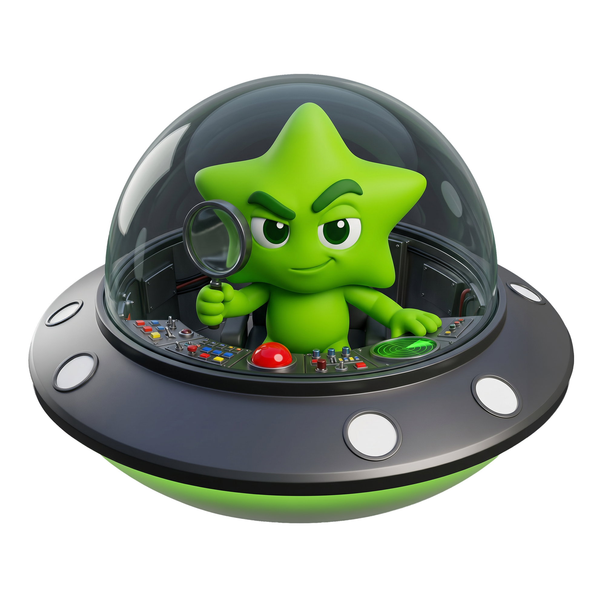
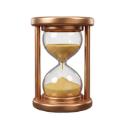
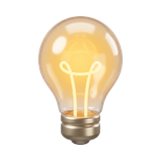
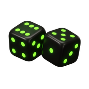
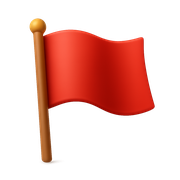

Se arma el proceso y se espera que la gente cumpla
Se define qué hay que hacer, se ordena para que sea eficiente, y se da por hecho que lo harán porque les toca.
La pregunta es ¿El proceso funciona?
METODOLOGÍA
Hay ocho razones que mueven a una persona a hacer algo. Están detrás de por qué revisas cuántos likes tuvo una foto, por qué nadie quiere romper una racha de 47 días, y por qué hay quien escribe en Wikipedia gratis.
Ese mapa se llama Octalysis, lo armó Yu-kai Chou, y esta página te lo explica brevemente. Al final diseñamos una herramienta que puede darte una idea inicial de qué mueve a tu equipo.

01 Entender
Empecemos por limpiar el término, porque casi todo lo que se llama gamificación no lo es. Se estima que el 80% de los proyectos fracasa, y casi siempre por la misma razón.
Se define qué hay que hacer, se ordena para que sea eficiente, y se da por hecho que lo harán porque les toca.
La pregunta es ¿El proceso funciona?
Quien va a hacerlo tiene sus propias razones para querer o no querer. Se construye alrededor de esas razones.
La pregunta es ¿Volvería mañana sin que se lo pidan?
Entender por qué la gente hace lo que hace, y usar eso para que quiera o disfrute hacer lo que al negocio le sirve.
Eso es todo. El resto son herramientas.
02 El marco
Yu-kai Chou revisó cientos de cosas que la gente hace por gusto, sin que nadie la obligue, y encontró que todas se apoyan en alguna de estas ocho razones. Las puso en un octágono porque el lugar de cada una significa algo, pero eso viene después.
Toca cada segmento para ver qué es, dónde lo has visto y cómo se activa.
03 El marco
La forma de aprender esto no es memorizar los ocho nombres: es reconocerlos cuando aparecen. Ocho situaciones que ya conoces. ¿Qué motivador está trabajando en cada una?
04 El marco
La figura no es un adorno. El lugar de cada motivador dice cómo se comporta. Hay dos formas de partirla, y las dos importan.
A la izquierda, lo que se hace por lo que se gana al final: son los extrínsecos, la razón está afuera. A la derecha, lo que se hace porque hacerlo ya vale la pena: los intrínsecos, la razón está adentro.
DesarrolloPropiedad 
Lo que quiere la persona está al final: el nivel, la pieza que falta, el premio que se acaba.
Sirven para: que la gente entre. Son la puerta.
Su límite: cuando el premio deja de sorprender, se cae todo.
 
Lo que quiere está en hacerlo: decidir, estar con los suyos, ver qué pasa.
Sirven para: que la gente se quede.
Su límite: arrancan lento. Sin algo visible, pocos entran el primer día.
Sentido Épico y Pérdida quedan justo en la mitad: no son de un lado ni del otro.
La regla: los extrínsecos para que entren, los intrínsecos para que se queden. Solo premios y se apaga; solo experiencia y nunca arranca.
Los tres de arriba mueven a la gente haciéndola sentir bien: son el sombrero blanco. Los tres de abajo la mueven incomodándola —apuro, ansiedad, miedo a perder algo— y son el sombrero negro. Blanco y negro no significa bueno y malo: significa cómo se siente.
Sentido ÉpicoDesarrolloCreatividad
La gente participa porque quiere.
A favor: no cansan. Nadie se quema de sentirse bien.
En contra: son lentos. Nadie hace nada hoy por esto.
EscasezImpredecibilidad 
La gente participa porque no puede parar.
A favor: funcionan hoy mismo.
En contra: desgastan. Con el tiempo la gente cumple y te odia.
La regla: el sombrero negro sirve para arrancar y para momentos puntuales. Si todo tu sistema vive ahí, aguanta un trimestre y se cae. Lo que sostiene es el blanco.
05 El marco
Este es el error más caro: armar un solo sistema y dejarlo igual para siempre. Lo que hace que alguien entre no es lo que lo hace volver, y nada de eso retiene al que lleva años. Toca cada momento para ver cómo cambia el octágono.
Esto es una base. Un buen diseño tiene que tener en cuenta muchas otras cosas, empezando por el octágono de la población específica con la que trabajas.
06 Aplicarlo
No a todo el mundo lo mueve lo mismo, y una forma rápida de aterrizarlo es agrupar a la gente en perfiles.
Aquí hay que decir algo: no existe una única forma de agrupar. Hay varias, cada una hecha para un contexto distinto, y ninguna es la verdad. La más conocida es la de Richard Bartle, que salió de observar jugadores de juegos en línea en los años noventa — por eso habla de cuatro perfiles y por eso se le nota el origen. Después se han propuesto otras pensadas para el trabajo y no para los juegos, como la de seis perfiles de Andrzej Marczewski.
Abajo está la de Bartle, porque es la más extendida y sirve de atajo. Pero léela como una lupa más, no como un diagnóstico: lo que de verdad manda es el octágono.
Nadie es un solo perfil: todos tenemos algo de los cuatro, en proporciones distintas, y además cambian según el día y la tarea. Si tu equipo no se parece a ninguno, no es que esté mal — es que esta forma de agrupar no lo alcanza. Pasa seguido, y el diagnóstico del final te lo dice cuando ocurre.
07 Aplicarlo
Ya sabes qué motivador quieres tocar. Falta lo concreto: qué le das a la gente y de qué forma se lo entregas. Son dos decisiones distintas, y la segunda pesa tanto como la primera.
Hay cuatro cosas que puedes dar: estatus, acceso, poder y cosas. La pirámide no dice cuál es mejor, dice qué te cuesta cada una y cuánto le dura a quien la recibe. Las de arriba salen baratas y duran; las de abajo cuestan más y se consumen rápido. Las cuatro sirven — en momentos distintos.
Lo mismo mueve distinto según cómo llegue. Mezclar varias formas rinde más que insistir con una.
Con la advertencia de cada una.
08 Tu caso
Ya tienes el marco. Lo que falta es lo único que el marco no te puede dar: cuáles de los ocho pesan en tu gente. Siete preguntas, y sale un octágono con tres motivadores fuertes, dos intermedios y tres débiles, con qué hacer en cada caso.
Cómo leer esto. Esto no es una medición completa: es un punto de partida para ordenar la conversación y saber por dónde empezar. El cálculo combina el octágono con patrones razonables de conducta, no con un estudio completo sobre tu gente, eso sólo se puede hacer manualmente.
Responde las preguntas y aquí aparece el octágono de tu equipo.
Esta es tu base aproximada: el punto de partida para empezar a diseñar los cuatro momentos de tu experiencia.
Los cuatro perfiles del capítulo 6, en la proporción que sugiere tu octágono. Recuerda que es una forma de agrupar entre varias: si no encaja, el octágono de arriba manda.
El cálculo del diagnóstico es una interpretación propia de ese marco, no un producto de The Octalysis Group.